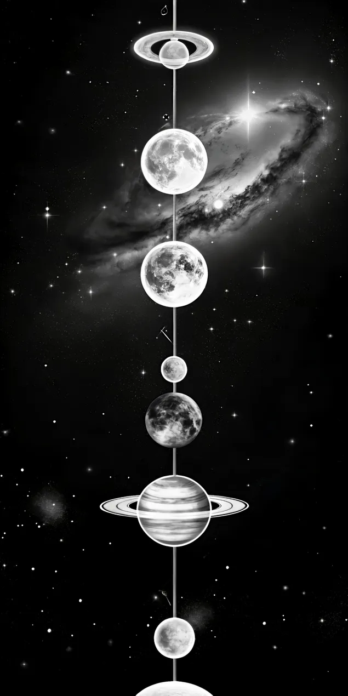

Bem vindo ao nosso
Sistema Solar
Conheça cada planeta e seja feliz
Conheça cada planeta e seja feliz


O Sistema Solar formou-se há cerca de 4,6 bilhões de anos na Via Láctea. Ele é composto pelo Sol — que concentra 99,8% de toda a massa do sistema — e por oito planetas principais divididos em duas categorias. Os internos e rochosos (Mercúrio, Vênus, Terra e Marte) possuem superfícies sólidas, enquanto os externos e gigantes gasosos (Júpiter, Saturno, Urano e Netuno) são formados por gases e fluidos.
Além deles, o sistema abriga planetas anões (como Plutão), centenas de luas, além de milhões de asteroides e cometas espalhados entre o Cinturão de Asteroides e a Nuvem de Oort.O Sistema Solar formou-se há cerca de 4,6 bilhões de anos na Via Láctea. Ele é composto pelo Sol — que concentra 99,8% de toda a massa do sistema — e por oito planetas principais divididos em duas categorias. Os internos e rochosos (Mercúrio, Vênus, Terra e Marte) possuem superfícies sólidas, enquanto os externos e gigantes gasosos (Júpiter, Saturno, Urano e Netuno) são formados por gases e fluidos. Além deles, o sistema abriga planetas anões (como Plutão), centenas de luas, além de milhões de asteroides e cometas espalhados entre o Cinturão de Asteroides e a Nuvem de Oort.
Situado em um dos braços espirais da Via Láctea, o Braço de Órion, o nosso sistema não é estático; ele viaja pelo espaço a uma velocidade impressionante de cerca de 828.000 km/h. Compreender essa vizinhança cósmica é fundamental para proteger o nosso próprio planeta e planejar os próximos passos da humanidade rumo ao espaço profundo.
